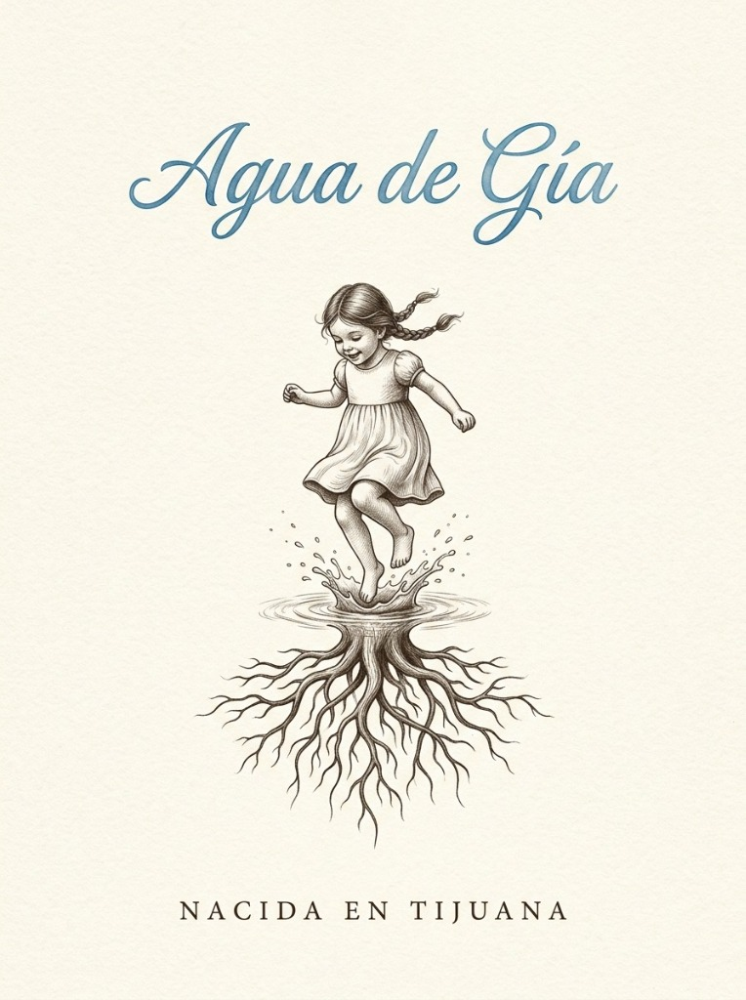
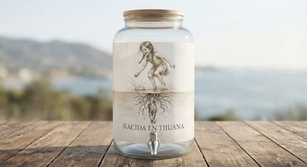

El Reto de Tijuana: Más del 90% del agua depende del Acueducto Río Colorado-Tijuana, mientras entre 3 y 8 metros bajo nuestras raíces el agua somera satura laderas y se desperdicia al drenaje. AquaResiliencia es la plataforma integral para localizarla y aprovecharla; «Agua de Gía» es nuestro primer pozo físico (Pozo 001 a 7 m) y planta piloto operando en Tijuana.

No usamos floculantes químicos externos (sin Biofine). El proceso combina electrofloculación controlada por caída de tensión (ΔV), reposo forzado por software, válvulas solenoides y una válvula de aguja motorizada:
| Etapa | Proceso Físico | Sensores que Miden | Actuadores y Regla del Algoritmo |
|---|---|---|---|
| 01. Extracción Somera | Pozo 001 a 7 m bajo Ley de Stokes (sin arrastre de arena). | Campana de aire (0–40 kPa), TDS con corte MOSFET y Batería de Tierra. |
Bomba de bajo caudal (24V) + Registro local CSV antes de transmitir. |
| 02. Llenado de Lote (1 BBL) | Ingreso de 117.3 Litros (1 BBL) midiendo fuente en vacío. | Medidor de flujo Hall + Voltaje en Vacío (V_vacío = 11.4–11.6 V). |
Válvula Solenoide SV-01 abre paso; al sumergir electrodo al 50%, fija línea base (V_base ≈ 10.6 V). |
| 03. Electrofloculación 12V/15A | Coagulación iónica sin químicos y barrido de microburbujas de H₂. | Divisor de voltaje continuo en ADC (1 Hz) midiendo caída ΔV. |
Relé Potencia 12V + Bomba Barrido H₂ (pulsos de 30–45 s cada 5–7 min sin romper nata). |
| 04. Reposo Forzado | Precipitación gravitacional y compactación del flóculo. | Temporizador de seguridad + Pulso de sensor TDS (1.5 s sin ruido DC). |
Bloqueo estricto por software: prohíbe abrir válvulas o mover el agua antes de sedimentar. |
| 05. Trasvase y Malla 80 µm | Extracción del agua clarificada protegiendo bombas contra limo y mica. | Sensor de flujo de salida + Nivel en tanque de distribución. | Válvula Solenoide SV-02 + Prefiltro de malla de 80 micras (80% va a riego/servicios). |
| 06. Ósmosis 20% con Válvula de Aguja | Ultrapurificación para beber (NOM-127) con retorno total de rechazo. | Transductor de acero inoxidable 316 (0–100 PSI) + TDS final. |
Actuador motorizado sobre Válvula de Aguja ajusta el rechazo para sostener 85–90 PSI. |
Diseñamos una estación subterránea oculta e independiente de la red eléctrica superficial, capaz de vigilar el acuífero durante media década o una década completa:
BQ25504) recarga de forma perpetua una batería de litio reciclada.LittleFS CSV) como una verdadera cápsula del tiempo del agua.12V / 15A con monitoreo continuo de ΔV, barrido de H₂ y tren físico 80/20 demostrado en video.85–90 PSI.